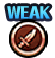

VS 키드
Level: 100+
Stage 3:
선제 행동:
6턴 동안 30000 데미지의 화상
4턴 동안 필살기 사용 횟수 1회 제한
Stage 4:
초기 상태: 킬러
99턴 동안 상태이상 무효
선제 행동:
9턴 동안 중간단 봉쇄
2턴 동안 슬롯 배리어([和] 슬롯 2회)
2턴 동안 일반 탭 이외의 조작을 하면 해당 행동 후에 데미지 30000을(를) 받는다
6턴 동안 방어력 10000배
7턴 동안 1000을(를) 넘는 데미지를 99% 감소
Stage 5:
초기 상태: 유스타스 키드
일반 공격 이외의 데미지 1
상태이상 무효
격파(전투 불능)계의 필살기 무효
비율 데미지 내성 100%
약점 타입: 참격형
선제 행동:
10턴 동안 하단 봉쇄
필살기 턴을 2턴 되돌리기
3턴 동안 슬롯 봉쇄
10턴 동안 상단의 선장효과 무효
6턴 동안 남은 체력 1로 버티기 효과
Level: 1-59
Stage 3:
선제 행동:
2턴 동안 2500 데미지의 화상
Stage 4:
선제 행동:
2턴 동안 중간단 봉쇄
2턴 동안 10000을(를) 넘는 데미지를 99% 감소
Stage 5:
초기 상태: 유스타스 키드
약점 타입: 참격형
선제 행동:
2턴 동안 하단 봉쇄
2턴 동안 상단의 선장효과 무효
Level: 60-79
Stage 3:
선제 행동:
3턴 동안 5000 데미지의 화상
Stage 4:
선제 행동:
3턴 동안 중간단 봉쇄
2턴 동안 7500을(를) 넘는 데미지를 99% 감소
Stage 5:
초기 상태: 유스타스 키드
약점 타입: 참격형
선제 행동:
4턴 동안 하단 봉쇄
4턴 동안 상단의 선장효과 무효
Level: 80-99
Stage 3:
선제 행동:
5턴 동안 15000 데미지의 화상
4턴 동안 필살기 사용 횟수 2회 제한
Stage 4:
초기 상태: 킬러
99턴 동안 상태이상 무효
선제 행동:
8턴 동안 중간단 봉쇄
2턴 동안 슬롯 배리어([和] 슬롯 1회)
2턴 동안 일반 탭 이외의 조작을 하면 해당 행동 후에 데미지 15000을(를) 받는다
6턴 동안 1000을(를) 넘는 데미지를 99% 감소
Stage 5:
초기 상태: 유스타스 키드
99턴 동안 상태이상 무효
99턴 동안격파(전투 불능)계의 필살기 무효
99턴 동안 일반 공격 이외의 데미지 1
약점 타입: 참격형
선제 행동:
9턴 동안 하단 봉쇄
필살기 턴을 1턴 되돌리기
2턴 동안 슬롯 봉쇄
9턴 동안 상단의 선장효과 무효
⬇ PNG 다운로드
 9턴 동안 중간단 봉쇄10턴 동안 하단 봉쇄
9턴 동안 중간단 봉쇄10턴 동안 하단 봉쇄 필살기 턴을 2턴 되돌리기
필살기 턴을 2턴 되돌리기 3턴 동안 슬롯 봉쇄
3턴 동안 슬롯 봉쇄 10턴 동안 상단의 선장효과 무효2턴 동안 중간단 봉쇄2턴 동안 하단 봉쇄2턴 동안 상단의 선장효과 무효3턴 동안 중간단 봉쇄4턴 동안 하단 봉쇄4턴 동안 상단의 선장효과 무효8턴 동안 중간단 봉쇄9턴 동안 하단 봉쇄필살기 턴을 1턴 되돌리기2턴 동안 슬롯 봉쇄9턴 동안 상단의 선장효과 무효
10턴 동안 상단의 선장효과 무효2턴 동안 중간단 봉쇄2턴 동안 하단 봉쇄2턴 동안 상단의 선장효과 무효3턴 동안 중간단 봉쇄4턴 동안 하단 봉쇄4턴 동안 상단의 선장효과 무효8턴 동안 중간단 봉쇄9턴 동안 하단 봉쇄필살기 턴을 1턴 되돌리기2턴 동안 슬롯 봉쇄9턴 동안 상단의 선장효과 무효{kind=link}